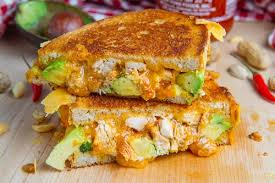

Grilled Chicken Sandwich

Ingridients
- 6 small boneless skinless chicken breasts or 3 large, slice in half or pounded thin
- ¼ cup olive oil
- 3 tablespoons Italian seasoning blend
- 1 teaspoon salt
- ½ teaspoon black ground pepper
- 6 slices mozzarella cheese
- 6 brioche or sesame buns
- ½ cup mayonnaise
- 6 green leaf lettuce leaves
- 6 tomato slices
Preparation steps
- Prepare your grill for medium direct heat. (Approximately 350 degrees)
- Use a meat tenderizer/mallet and pound the chicken until it is even in thickness and about ½-¾ inch thick. If you are using large chicken breasts, you should be able to cut them in half. Use your bun as a sizing guide.
- Brush the chicken breasts with oil and season with salt, pepper and italian seasoning on both sides.
- Place on the preheated grill and cook for about 8-10 minutes, turning once halfway through cooking. Check for doneness and continue cooking until the internal temperature reaches 165 degrees.
- Remove the chicken from the grill and place the mozzarella on top.
- Prepare each bottom half of the bun with mayonnaise, lettuce and tomato then top with the chicken and bun.